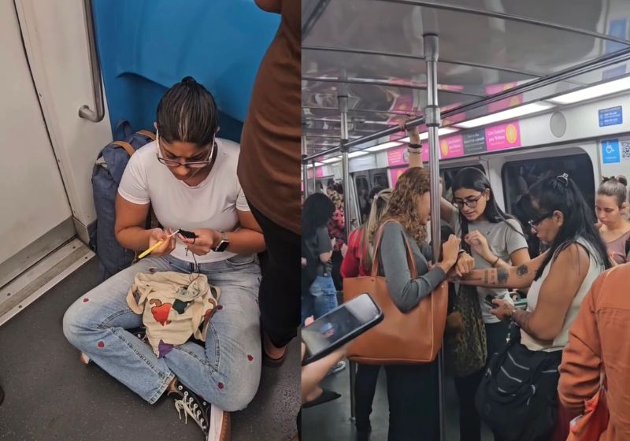

Uma gaúcha que mora no Rio de Janeiro registrou como é tranquilo viajar no vagão para mulheres na capital fluminense.
14 de maio de 2026

Uma gaúcha que mora no Rio de Janeiro registrou como é tranquilo viajar no vagão para mulheres na capital fluminense. Lá dentro não tem medo de assalto, importunação nem assédio. Elas viajam num sossego, numa calma, numa serenidade, que dá até gosto de ver.
Nathalie Ranzolin mostra no vídeo que, enquanto o trem se desloca, mulheres conversam, estudam, mexem no celular, pagam contas… e tem uma que até faz tricô sentada no chão, na maior tranquilidade.
Nathalie conta no perfil dela que é uma artista do TDH, que nasceu no Rio Grande do Sul e mora no Vidigal.
O vídeo, simples e curto, com 30 segundos de duração, mostra que o espaço funciona realmente e protege mulheres de assédio.
E já caiu no agrado das seguidoras. Foi visto mais de 2,2 milhões de vezes no Instagram da artista.
“A mana fazendo tricô juro”, diz Nathalie na legenda.
As seguidoras da Nathalie explicam porque é bom viajar no vagão feminino.
“Dado o direito às mulheres a andarem distraídas. Um lugar seguro”, comentou uma. “Um vagão que não me impede de usar o metrô, um vagão que não tira direitos dos homens, um vagão que não tem qualidades especiais superiores aos demais vagões, é apenas um vagão exclusivo para mulheres, com a finalidade de protegê-las de assédio, porque ter raiva disso?!”, questionou outra seguidora.
“Vídeo com cheiro de baunilha, rosas e amêndoas”, comentou uma seguidora. “O mundo devia ser um grande metrô feminino”, disse outra. “Esse vagão tinha que ter todas as horas e em todos os Estados”, pediu outra seguidora da artista.